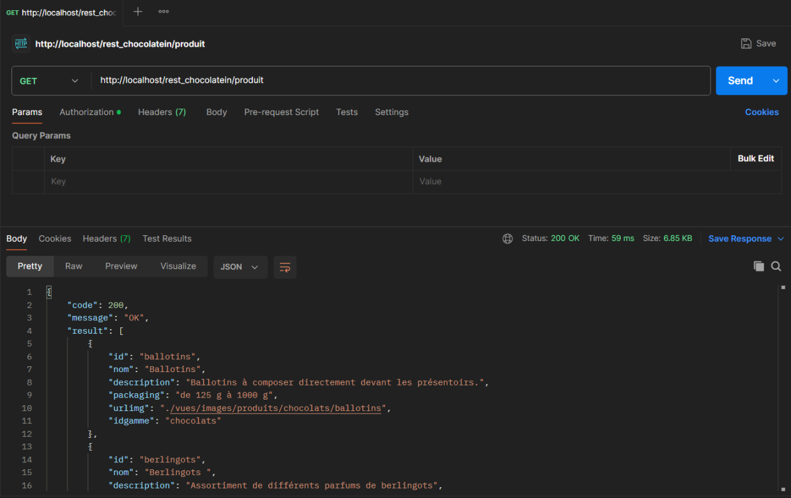
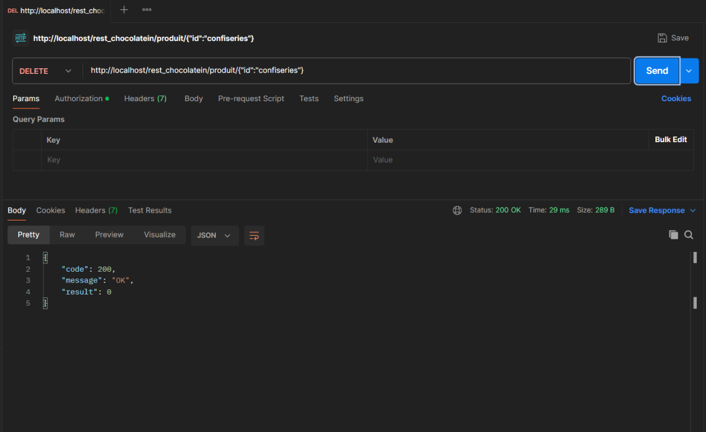

Travaux pratiques - API Chocolatein
2ème année BTS SIO (Décembre 2024)
Ce travail pratique s’inscrit dans la continuité de mon apprentissage de PHP, avec un focus particulier sur le développement d’API REST. L’objectif du projet était de comprendre comment construire et exploiter une API, afin de permettre aux applications d’accéder à une base de données via des requêtes HTTP, sans interagir directement avec la base. Ce changement d’approche s’inscrit dans une volonté de modernisation des pratiques en entreprise, visant à centraliser les échanges de données à travers des services web robustes, indépendants des interfaces clientes. Ce TP m’a permis de découvrir les principes fondamentaux des API REST (méthodes HTTP, routes, statuts, formats de réponse JSON, etc.), d’en créer une en PHP, et de la tester à l’aide de l’outil Postman. J’ai ainsi pu me familiariser avec le découplage entre front-end et back-end, en exposant proprement les données via des endpoints sécurisés et bien structurés.
üîß Langages et technologies utilis√©s :
- PHP
- MySQL
- Postman
- Json
üìé Documents li√©s :
✅ Compétences couvertes :
- - Analyser les objectifs et les modalités d’organisation d’un projet : Objectif défini : exposer une base de données via des services web. Approche structurée (endpoints, statuts HTTP, sécurité).
- - Planifier les activités : Mise en œuvre progressive : conception de l’API, gestion des routes, tests.
- - Réaliser les tests d’intégration et d’acceptation d’un service : Implémentation de tests unitaires, d’intégration et fonctionnels avec PHPUnit et doctrine-test-bundle.
- - Déployer un service : Configuration de l’environnement local (WampServer, Composer), préparation à un usage utilisateur (interfaces publique et admin).
- - Mettre en place son environnement d’apprentissage personnel : Découverte approfondie des API REST, des outils comme Postman, et des bonnes pratiques d’architecture web (découplage front/back).
- - Développer son projet professionnel : Expérimentation d’une architecture moderne largement utilisée en entreprise, renforcement de compétences clés côté backend.
- - Traiter des demandes concernant les applications : Implémentation de services robustes pour répondre aux besoins d’accès aux données côté client de manière sécurisée et standardisée.
Compte rendu et captures d'écran de l'application :
Cette requête vise à sélectionner tous les produits dans la table produit :
Cela fait donc appel à traitementSelect depuis le routage GET, puis aucun cas spécifique ici donc cela appel la fonction selectTuplesOneTable :

Ici c'est la même chose sauf qu'on spécifie une 'idgamme' :

Cette requête vise à insérer un produit dans la table produit :

Cela fait donc appel à traitementInsert depuis le routage POST, puis appel la fonction insertProduit :

Cette requête vise à supprimer un produit dans la table produit :
Cela fait donc appel à traitementInsert depuis le routage POST, puis aucun cas spécifique ici donc cela appel la fonction deleteTuplesOneTable :